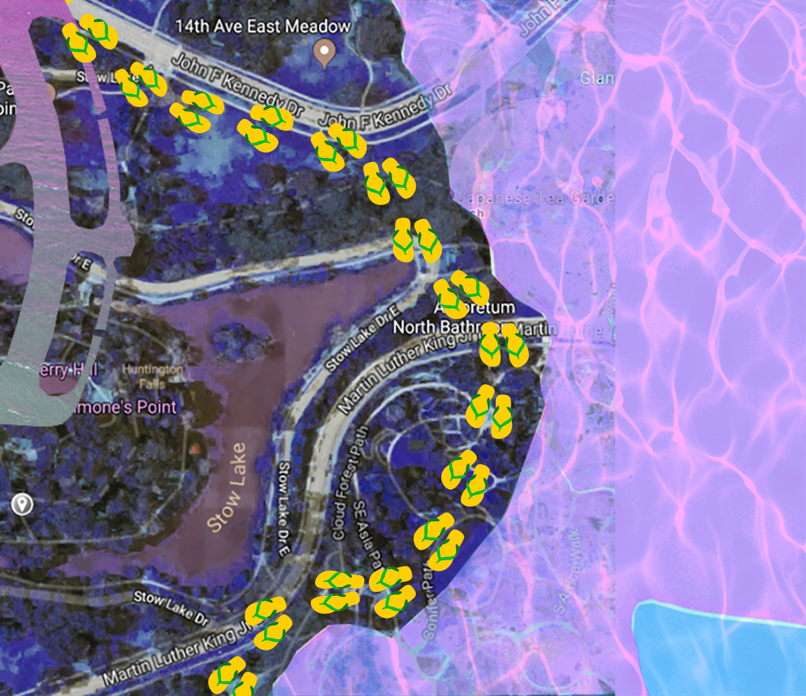
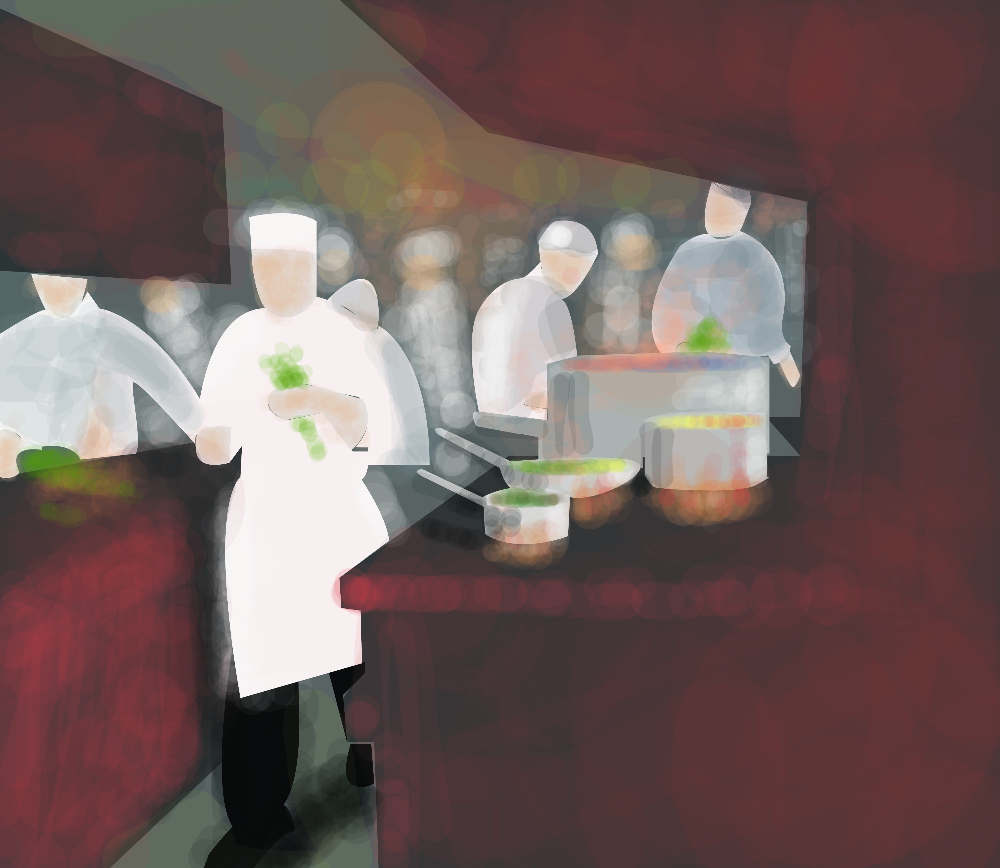

Mona's Portfolio
2018

"Abnormality" | Photoshop, Audacity | 2018
This image of the upside car is already unusual, without the glitch, but I want it to seem more out of this world. I wanted to make it more unclear, because I want my viewers to observe, think, and question when they look at my piece. Curiosity is a good thing. This image is from the internet and I felt attached to it because it was it represents my thoughts. My opinions are usually different from my peers, just like how this car is different from the other cars. I do not want to filter the photo too much, because I want the original picture itself to speak. The glitches surrounding the original pictures are supposed to emphasis the abnormality.
"Nostalgic Childhood" | Photoshop | 2018
This piece consists of a map of my hometown, a pool, and flipflops. When I was a child, I loved to swim on the beach and in swimming pools. This piece explores the nostalgic summer days of my childhood.

"Afternoon Rush" | Illustrator, Audacity | 2018
I put together kitchen noises, like the sound of knives, cutting, water splashing, frying, boiling, etc. I also included muffled talking because the setting is in a restaurant, and the talking is from the customers. I wanted a realistic setting and I wanted the layers in my sound to demonstrate a fast paced environment. The faint violin music in the background enhances the feeling of business, work, and rush.
"Schooting Caution" | Premiere Pro CC | 2018
Proceed with caution when riding a scooter!
"Is this Me?" | Premiere Pro CC | 2018
A process of fading passion for vlogging and video editing.
 "Nature's Wrath" | Github, Atom | 2018
"Nature's Wrath" | Github, Atom | 2018
 "Feed Me" | Github, p5.js, Atom | 2018
"Feed Me" | Github, p5.js, Atom | 2018